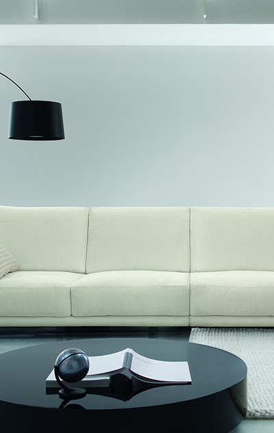

<!DOCTYPE html><html lang="ru"><head><title> Главная - Oikos</title><meta charset="UTF-8"><meta name="keywords" content="Test"><meta name="description" content="Test"><meta name="viewport" content="width=device-width, initial-scale=1.0, minimum-scale=1.0, maximum-scale=1.0, user-scalable=no"><link rel="stylesheet" href="css/vendor.css"><link rel="stylesheet" href="css/style.css"></head><body></body></html><!--=============== header ===============-->		<header class="header"><a class="logo" href="index.html"></a><nav class="menu"><a class="menu__link p" href="">главная</a><a class="menu__link p" href="">о компании</a><a class="menu__link p" href="">услуги</a><a class="menu__link p" href="">новости</a><a class="menu__link p" href="">о ремонте</a><a class="menu__link p" href="">отзывы</a><a class="menu__link p" href="">вакансии</a><a class="menu__link p" href="">контакты</a></nav><a class="tel icon icon-phone p" href="tel:336734089">(33) 673 40 89 (мтс)</a></header><!--=============== main ===============--><main class="main"><div class="slider-wrap"><div class="slider owl-carousel owl-theme"><div class="slider__item"><div class="slider__txt"><h2 class="h2 slider__title">ultrasaten</h2><p class="p slider__subtitle">Податливый и экологически чистый материал, <br> является идеальным для отделки детских и лечебных заведений</p><a class="btn" href="">в раздел</a></div></div><div class="slider__item"></div></div><div class="slider__links"><div class="slider__contacts"><a class="p slider__contacts-link" href="mailto:dekorbrest@tut.by">Email: dekorbrest@tut.by</a><a class="p slider__contacts-link" href="tel:+375336734089">Тел: +375 (33) 673-40-89</a></div><div class="social"> <span class="p">Посетите нас:  </span><a class="icon icon-vk p social__link" href="vk.ru"></a><a class="icon icon-fb p social__link" href="vk.ru"></a><a class="icon icon-odk p social__link" href="vk.ru"></a></div></div></div><div class="content"><div class="container"><div class="plus"><div class="plus__title h3">Наши преимущества</div><div class="list"><div class="list__item"><i class="list__icon icon icon-roller"></i><div class="list__about"><div class="list__title h5">Опытность</div><div class="list__txt p">Мы провели более 3000 ремонтов квартир, домов, офисов и т.д</div></div></div><div class="list__item"><i class="list__icon icon icon-clock"></i><div class="list__about"><div class="list__title h5">Проверка временем</div><div class="list__txt p">Мы работаем с 2002 года</div></div></div><div class="list__item"><i class="list__icon icon icon-ok"></i><div class="list__about"><div class="list__title h5">Гарантия качества</div><div class="list__txt p">Срок гарантии наших работ более 10 лет</div></div></div><div class="list__item"><i class="list__icon icon icon-people"></i><div class="list__about"><div class="list__title h5">Индивидуальный подход</div><div class="list__txt p">к каждому клиенту</div></div></div><div class="list__item"><i class="list__icon icon icon-wall"></i><div class="list__about"><div class="list__title h5">Любые задачи</div><div class="list__txt p">Мы выполняем проекты любой сложности</div></div></div><div class="list__item"><i class="list__icon icon icon-palitra"></i><div class="list__about"><div class="list__title h5">Огромный выбор</div><div class="list__txt p">Более 5000 цветов и фактур. Или дизайнерский цвет.	</div></div></div></div></div><div class="slider-plus owl-carousel owl-theme"><div class="slider-plus__item"><div class="slider-plus__we"><p class="h4">почему <br> OIKOS</p><p class="p"> покрытия OIKOS изготовлены на водной основе с применением природного сырья, что является гарантом их экологичности. Краски не горят и не имеют запаха, все поверхности паропроницаемы, т.е. дышат, имеют широкую цветовую гамму — более 2000 цветов по NCS, RAL, DCS и собственной коллекции.</p></div><div class="slider-plus__img"></div><div class="slider-plus__txt"><p class="h3">Салон OIKOS - декоративные  штукатурки и краски.</p><p class="p">Продукция OIKOS — это декоративная штукатурка и краски высокого качества, которые применяются для внутренней отделки помещений и наружных фасадов. Отсутствие в составе растворителей делает их экологически чистыми и совсем безвредными для человека и окружающей среды. Декоративные краски и штукатурки характеризуются высокой паропроницаемостью и водоотталкивающим эффектом, устойчивостью к воздействию солнца, ветра и мороза. Они также предотвращают образование </p></div><a class="p slider-plus__link btn_bordered btn_shadow" href="">подробнее</a></div><div class="slider-plus__item"><div class="slider-plus__we"><p class="h4">почему <br> OIKOS</p><p class="p"> покрытия OIKOS изготовлены на водной основе с применением природного сырья, что является гарантом их экологичности. Краски не горят и не имеют запаха, все поверхности паропроницаемы, т.е. дышат, имеют широкую цветовую гамму — более 2000 цветов по NCS, RAL, DCS и собственной коллекции.</p></div><div class="slider-plus__img"></div><div class="slider-plus__txt"><p class="h3">Салон OIKOS - декоративные  штукатурки и краски.</p><p class="p">Продукция OIKOS — это декоративная штукатурка и краски высокого качества, которые применяются для внутренней отделки помещений и наружных фасадов. Отсутствие в составе растворителей делает их экологически чистыми и совсем безвредными для человека и окружающей среды. Декоративные краски и штукатурки характеризуются высокой паропроницаемостью и водоотталкивающим эффектом, устойчивостью к воздействию солнца, ветра и мороза. Они также предотвращают образование </p></div></div></div></div></div></main><!--=============== footer ===============--><footer class="footer"></footer><script src="js/vendor.js"></script><script src="js/custom.js"></script>